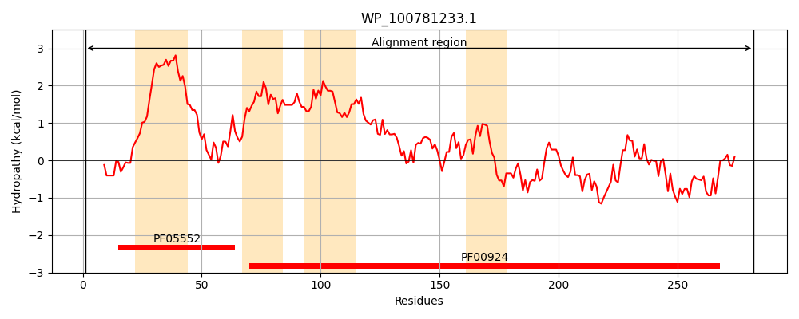
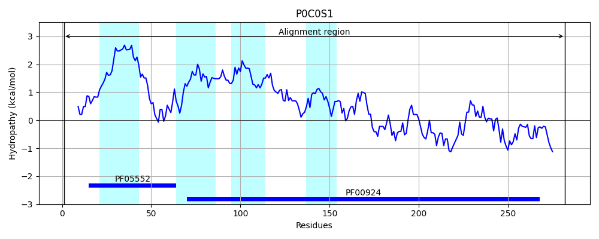
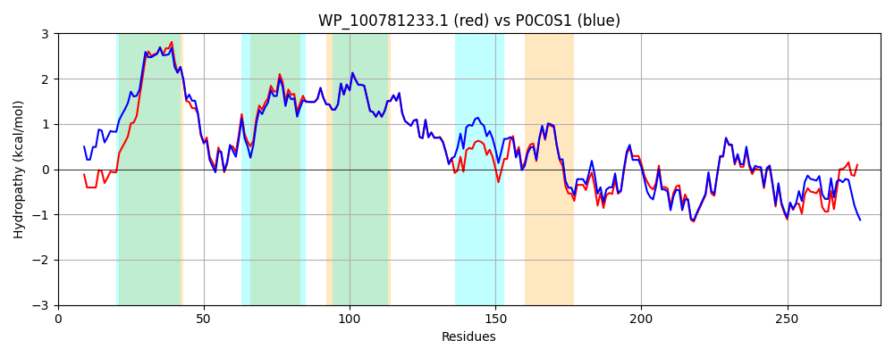

Hit Accession: P0C0S1
Hit TCID: 1.A.23.2.1
Hit Description: gnl|BL_ORD_ID|8876 gnl|TC-DB|P0C0S1|1.A.23.2.1 Small-conductance mechanosensitive channel - Escherichia coli.
Mach Len: 282
e:0.000000
Query TMS Count : 4
Hit TMS Count: 4
TMS-Overlap Score: 3.000000
Predicted Substrates:CHEBI:24870;ion
BLAST Alignment:
Score: 1217 , Bit scores: 473 bits, E-value: 8.9e-171, Alignment length: 282, Percentage identity: 84
Query: 1 MEDLNVVDSINNAGTWLARNQELLLSYAVNIVAAIVILVIGMIVARIVSNTVNRLMLARKIDATVADFLSALVRYAVIAFTLIAALGRVGVQTASVIAVLGAAGLAVGLALQGSLSNLAAGVLLVMFRPFRAGEYVDLGGIAGTVQNVQIFSTTLRTADGKIVVVPNGKIIAGNIINFSREPARRNEFIIGVSYDADIDKVKQLLTSIIESDDRILRDREMTVRLNELGASSVNFVVRVWSKSSDLQNVYWDVLERIKRDFDANGISFPYPQMDVHVVQLPE 282
MEDLNVVDSIN AG+WL NQ LLLSYAVNIVAA+ I+++G+I+AR++SN VNRLM++RKIDATVADFLSALVRY +IAFTLIAALGRVGVQTASVIAVLGAAGLAVGLALQGSLSNLAAGVLLVMFRPFRAGEYVDLGG+AGTV +VQIFSTT+RTADGKI+V+PNGKIIAGNIINFSREP RRNEFIIGV+YD+DID+VKQ+LT+II+S+DRIL+DREMTVRLNELGASS+NFVVRVWS S DLQNVYWDVLERIKR+FDA GISFPYPQMDV+ ++ E
Sbjct: 1 MEDLNVVDSINGAGSWLVANQALLLSYAVNIVAALAIIIVGLIIARMISNAVNRLMISRKIDATVADFLSALVRYGIIAFTLIAALGRVGVQTASVIAVLGAAGLAVGLALQGSLSNLAAGVLLVMFRPFRAGEYVDLGGVAGTVLSVQIFSTTMRTADGKIIVIPNGKIIAGNIINFSREPVRRNEFIIGVAYDSDIDQVKQILTNIIQSEDRILKDREMTVRLNELGASSINFVVRVWSNSGDLQNVYWDVLERIKREFDAAGISFPYPQMDVNFKRVKE 282 | Protein Hydropathy Plots: |
|---|
|  |  |
Pairwise Alignment-Hydropathy Plot:
|
|---|
|  |